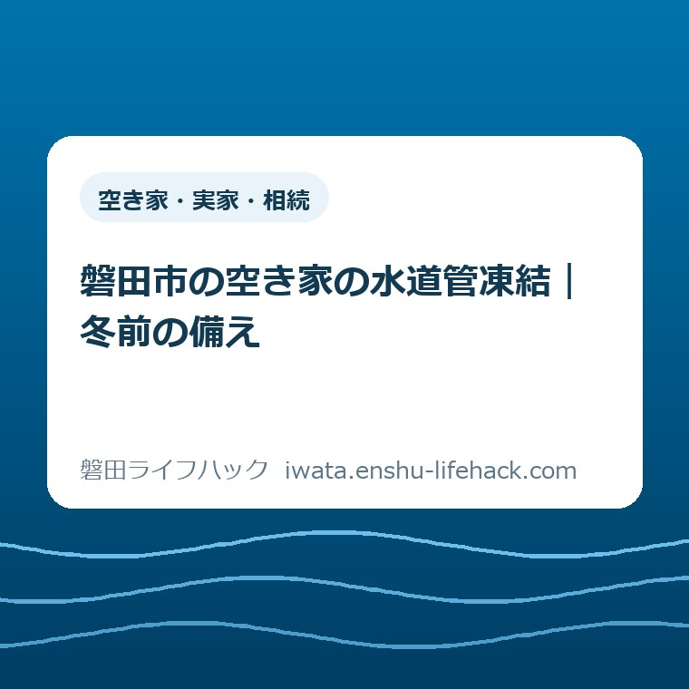
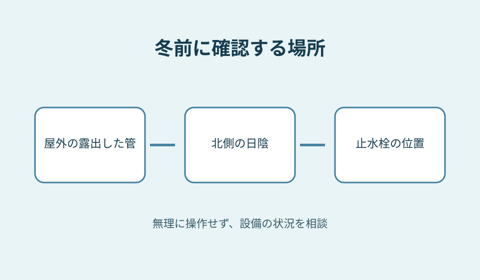
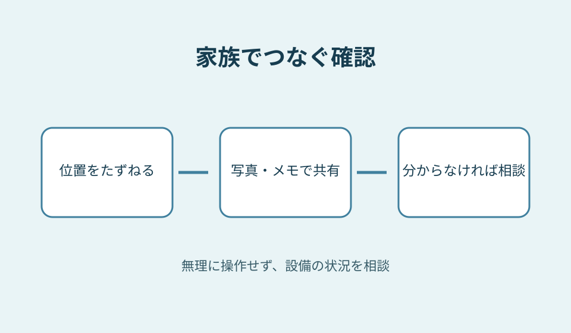

空き家・実家・相続
磐田市の空き家の水道管凍結｜冬前の備え

この記事の要点
Q. 遠方の実家で、冬の水道管にどう備えればよいですか？
A. まず止水栓の場所を家族で共有し、露出した管を確認します。設備や利用状況は家ごとに異なるため、具体的な対策は磐田市や指定給水装置工事事業者に確認してください。
遠方の実家を守るために、まず場所を知る
磐田市にある実家が空き家になると、通うだけでも時間と交通費がかかります。家の片付け、庭の手入れ、郵便物の確認を続けながら、水道まで気に掛けるのは簡単ではありません。まず、家族がすでに担っている手間を数えるところから始めたいと思います。
冬を前に一つだけ確かめるなら、止水栓がどこにあるかです。止水栓は水を止めるための設備で、市の案内ではメーターボックス内または道路付近にあるとされています。場所が分かれば、異常時に何を探せばよいか、家族で共有できます。
ただし、家の設備や利用状況はそれぞれ違います。給湯器などを含め、止水後の扱いや作業方法が分からないときは、自己判断で作業を進めず、上下水道の窓口や指定給水装置工事事業者に相談してください。
実家を今後どうするか決めていなくても、設備の位置を確認することはできます。売るか残すかという大きな判断と、次の寒波に備えて情報を集めることを分けて考えれば、家族の話し合いも始めやすくなります。

磐田市が知らせる凍結の条件
磐田市の「水道管の凍結対策」は、朝の冷え込みが厳しいときの目安をマイナス4℃以下とし、気温が上がらない日が続く場合も凍結しやすいと説明しています。目安は家ごとの凍結を保証する温度ではありません。
凍結すると水が出なくなるだけでなく、水道管が破裂して漏水することがあります。市は、寒波が来る前に水道管にも対策をするよう呼び掛けています。予報を待ってから遠方の実家へ向かう負担を考えると、余裕のある訪問時に位置を知っておきたいところです。
特に注意する場所として、市は屋外で風が直接当たる管、北側の日陰にある管、カバーが外れたむき出しの管や給湯機の配管を挙げています。図面が手元になくても、見える範囲にこうした場所がないか確認できます。
市の案内には、保温材やタオルなどで管を覆い、濡れないようにする方法もあります。現場で安全に手が届くか、すでに保温材が傷んでいないかは家ごとに違います。無理に狭い場所へ入り込まず、作業が必要なら専門の事業者に相談します。
水を少量出し続ける方法も市は紹介していますが、出した水には料金がかかります。人がいない家で水を出し続けることを、この方法だけを見て決めないでください。設備の状態や管理できる人を踏まえて、具体的な方法を相談することが大切です。

空き家で見落としやすい漏水
空き家の漏水は、誰も気付かない期間が長くなることがあります。磐田市は、凍結で管が破裂して漏水すると、水道料金が高額になることや、修理費が所有者の負担になることに注意を促しています。水を普段使っていなくても、配管の備えは必要です。
意外に感じるかもしれませんが、市が空き家向けに示すのは、特別な機器を買うことだけではありません。止水栓を閉めるなどの凍結防止です。まず栓の場所が分かるだけでも、家族が現地で判断するための出発点になります。
止水栓は、家族の誰かが知っていても、別の人に伝わっていないことがあります。メーターボックスの場所を建物のどの側にあるかという言葉と一緒に記録し、必要なときに見られるよう共有してください。住所だけでは現地で探し直すことになります。
写真を残す場合は、敷地の入口からの位置が分かる一枚と、箱の中の様子が分かる一枚を分けると役立ちます。写真は家族の中で共有し、住所や設備の情報を誰でも見られる場所に載せないようにします。撮影が難しければ、紙に位置を書く方法でも十分です。
すでに水道の使用をやめている家でも、閉栓の状態や設備に残る水の扱いをこのページだけで断定することはできません。使用状況と設備を伝え、市の窓口や工事事業者に確認してください。止水栓を操作すればすべての凍結を防げると決めつけないことが必要です。
家族で準備する確認の順番
最初に、次に現地へ行ける人と日を確認します。遠方に住む家族が一人で何度も往復する前提にせず、帰省や他の用事と一緒に確認できるか話し合います。訪問日が決まらなければ、家の場所と水道の利用状況だけを先に共有しても構いません。
次に、見える範囲で水道メーターボックスと止水栓を探します。市は止水栓の位置をメーターボックス内または道路付近と案内していますが、現地の設備が分からなければ、無理に操作せず相談先に尋ねます。草や物で見えにくい場合も安全を優先します。
その後、風が当たる屋外や北側の日陰に露出した管がないか確認します。管の材質や内部の状態は外から分からないことがあります。見つけた場所を記録し、保温が必要か、既存の保温材に問題がないかを相談するための材料にします。
家族で確認する項目は「位置」「現在の水道の利用状況」「次に相談する人」の三つに絞ると、初回から全部を決める必要がなくなります。誰が窓口へ連絡するかが決まらないときは、連絡先だけをメモに残しておけば次に進めます。
訪問を他の人に依頼する場合は、水道の確認が依頼内容に含まれるかを別に尋ねます。外から見るだけなのか、メーターボックスを開けるのか、写真を撮るのかで作業は違います。空き家見回りを頼む前の準備も、作業範囲を相談するときの参考になります。
凍結や漏水が疑われるとき
蛇口を開けても水が出ない場合、市は凍った部分に布をかぶせてぬるま湯をかけ、ゆっくり溶かす方法を案内しています。すぐに水が出なければ蛇口を閉めて自然に溶けるのを待ちます。熱湯を直接かけると管が破裂することがあるため、使わないでください。
破裂した場合は、宅地内の止水栓を閉め、破裂部分をビニールテープなどで応急処置し、直ちに市の指定給水装置工事事業者へ修理を依頼するよう市は案内しています。水が噴き出す場所や電気設備の近くなど、危険な状況では無理に近づかず相談してください。
市の「水道が故障したときは」によると、全ての蛇口を閉めても水道メーターのパイロットという小さなコマが回っていれば、漏水の可能性があります。メーター付近の漏水は上下水道料金センターに連絡し、負担や修理について現地確認を受けます。
漏水に伴う料金の減免は、修理を終え、一定の要件を満たした場合に対象となることがあります。凍結による漏水も対象になる場合があると市は案内していますが、すべてのケースで適用されるわけではありません。修理の状況を伝え、条件を窓口に確認します。
遠方で異常の知らせを受けた場合、誰が現地へ行けるか、事業者へ連絡できるか、鍵を誰が持っているかを分けて整理します。修理の内容や費用の見積もりは現場次第です。市の指定事業者に設備と状況を伝え、費用や作業を確認してください。
現地へ行く前に伝えること
現地での確認を家族以外にお願いするときは、建物の住所と連絡先だけでなく、どこまで立ち入れるかを事前に決めます。門やメーターボックスが確認できる範囲にあるか、鍵を渡す必要があるかは家によって異なります。作業を頼む相手が所有者と連絡を取れるかも確かめておきます。
水道管に異常が見つかった場合、写真で報告してほしいのか、その場から電話してほしいのかも共有します。修理の依頼まで任せるかどうかは別の話です。緊急時でも費用や判断の連絡先が分からなければ、対応する人が困ることがあります。
連絡先を記録するときは、家族の代表者に加え、市の上下水道料金センターや必要に応じて相談する指定給水装置工事事業者の情報をまとめます。電話番号や受付の案内は変わることがあるので、連絡する前に市の公式ページを開いて確かめてください。
現地で露出した配管を見つけても、外見だけで管の中の状態や破損の有無を判断することはできません。気になる場所の写真とともに、いつ撮影したか、どの方向から見たかを書いておくと、後から相談するときの説明に役立ちます。
確認した結果、すぐに修理が必要かどうか迷うこともあります。水が漏れている、管が破裂しているといった異常と、今のところ異常はないが保温について相談したい場合は分けて伝えます。状態を推測で補わず、見えたことをそのまま伝えることが大切です。
実家の片付けや相続の話が進んでいる家族にとって、水道だけを別の用事として増やすのは負担です。次に誰かが家を訪ねる予定があるなら、その人に位置の確認を頼めるか相談します。難しければ、まず市の窓口に設備について尋ねるところからで構いません。
確認後の記録は、家族が後で読み返せる場所にまとめます。止水栓の位置、確認日、分からなかった点、相談先という四項目があれば、次の人が最初から探し直す負担を減らせます。作業済みと記すときも、実際に何を確認したかを添えてください。
良い点と注文したい点
良い点は、市が一般の住宅だけでなく、空き家や長期不在の家に向けた注意を明示していることです。露出した配管だけではなく、給湯機の配管にも触れており、家を離れる人が確認箇所を考える手掛かりになります。
もう一つの良い点は、予防、凍ったとき、破裂したときの案内が一つのページにまとまっていることです。平常時に確認する家族と、異常時に対応する家族が同じ資料を読めます。費用負担や減免の相談先までたどれることも、次の行動に役立ちます。
注文したい点は、遠方にいる家族が「現地に行く前に何を確認し、誰に相談するか」を想像する手間が残ることです。空き家の状況は家ごとに異なるため一律の指示は難しいものの、相談時に伝える情報の例があると、最初の電話をかけやすくなると私は考えます。
また、止水栓を閉めるという短い言葉から、給湯器を含む設備全体の作業が終わると受け取られない説明も大切です。家族ができる確認と、専門の人に相談する作業の境目を意識すれば、遠方の管理者も無理をせず準備できます。
対案・結論——今日できる一歩
今日の一歩は、家族に「実家の止水栓はどこにあるか」と聞くことです。場所を知る人がいれば、次の訪問で写真かメモに残します。誰も分からなければ、それ自体を相談事項として記録します。今日中に現地へ行く必要はありません。
連絡するときは、家の所在地、水道を使っているかどうか、現在分かっている設備の状態を伝えます。不明な項目は推測せず、不明のままで構いません。所有者と連絡する人が異なる場合は、その関係も伝えて必要な手続きを確認してください。
相談の前に家族で話し合いたいことが複数ある場合は、空き家相談会に向けた家族メモの考え方も使えます。水道の質問を一つ書き加えるだけで、ほかの用事と一緒に整理できます。
家を残すか、貸すか、売るかは、設備の確認と同じ日に決めなくてもよいことです。磐田市の空き家数を整理した記事も、地域の状況を知る入り口になります。数字の理解と、ご家族の家についての判断は分けて考えます。
大石の視点
大石浩之（磐田市／不動産業）の意見として、実家の管理は「何をするか」より先に「誰がいつ動けるか」を決めるのが現実的だと思います。家族が別々の場所で暮らしていれば、現地を見るだけでも仕事や移動の調整が必要だからです。
私は、止水栓の位置を家族で共有することは、冬の備えの出発点になると考えます。一方で、閉めるだけで安心と言い切ってよいかは迷います。設備に残る水や給湯機の扱いは家によって違い、市の短い案内だけで個別の家を判断できないためです。
分からないことを分からないまま伝えるのは、準備不足ではありません。むしろ、写真や利用状況を添えて窓口や事業者に相談することが、余計な往復や誤った作業を減らすための段取りになります。結論を急がず、確認できたことから一つずつ共有してください。
よくある質問
空き家では止水栓を閉めれば必ず凍結を防げますか？
市は止水栓を閉めるなどの対策を案内していますが、設備の状況は家ごとに異なります。給湯機や配管に残る水の扱いも含め、使用状況を伝えて市の窓口や指定給水装置工事事業者に確認してください。
止水栓の場所が分からない場合はどうしますか？
市はメーターボックス内または道路付近と案内しています。現地で見つからない場合や操作方法が分からない場合は無理に動かさず、所在地と水道の利用状況を伝えて上下水道の窓口などに相談してください。
凍結による漏水の水道料金は減免されますか？
市は寒波などによる漏水でも減免の対象となる場合があると案内しています。漏水修理の完了など一定の条件があるため、適用を決めつけず、上下水道料金センターへ事情を伝えて確認してください。
参考にした公式情報
- 水道管の凍結対策／磐田市（2026年10月27日確認）
- 水道が故障したときは／磐田市（2026年10月27日確認）
最終確認日：2026-10-27 ／ 本記事は公表情報と執筆者の見解を分けて記載しています。制度・数値・公開状況は変更される場合があるため、最新情報は磐田市公式ページでご確認ください。
 大石浩之／磐田市／不動産業・宅地建物取引士
大石浩之／磐田市／不動産業・宅地建物取引士